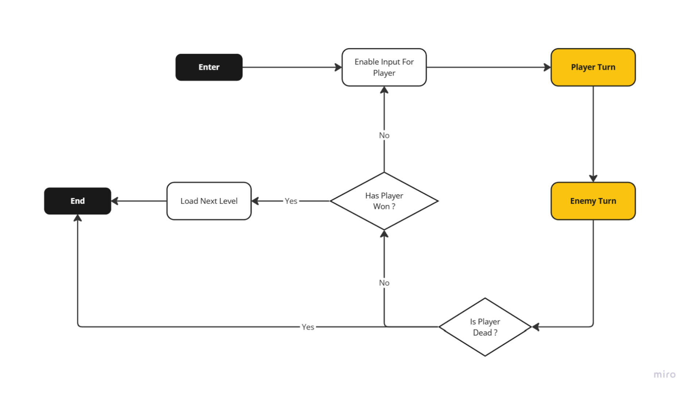
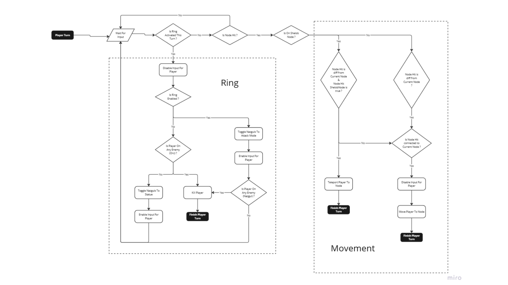
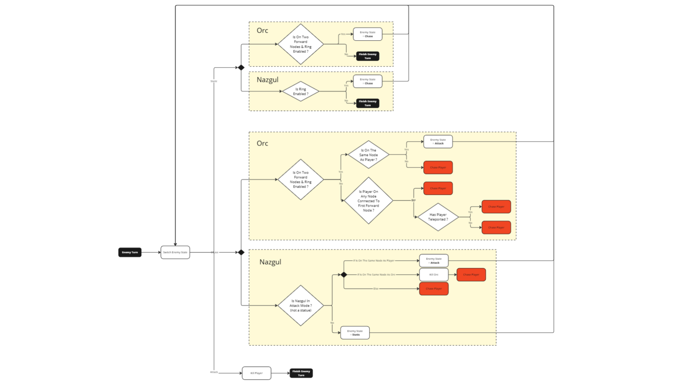

GollumGO.
A tactical puzzle game set in the Dead Marshes. You play as Gollum. Use the One Ring strategically — it hides you from Orcs, but exposes you to the Nazgûl. Plan every move carefully to reach the exit.
A puzzle of visibility.
Every level is a node graph. Orcs patrol fixed paths; Nazgûl hunt anything wearing the Ring. The same move is safe or fatal depending on who's looking — and what's on your finger. The tension comes from that asymmetry: the Ring is your only tool and your biggest threat.
Built over 3 months by a team of 6, entirely in Unreal Engine 5 with Blueprints. I was responsible for the ring mechanic and enemy AI — including the Orc and Nazgûl behavior systems — as well as the node movement logic and the node graph construction (defining which nodes connect to which).
From the marshes.
See it in motion.
How it's built.
Reverse engineering as a starting point
GollumGO was inspired by Hitman GO. Before writing a single line of Blueprint, we reverse-engineered its logic — studying how the turn-based grid system works, what rules govern movement, and how enemy behavior is sequenced. That analysis shaped every architectural decision that followed.
Global game flow — GameMode as state machine
The GameMode acts as the central authority for all game logic.
Because it is instantiated per level, it fits naturally into Unreal's lifecycle
and avoids the pitfalls of global references. It drives the main state machine,
cycling through PlayerTurn, EnemyTurn, TurnEnd,
PlayerVictory, and PlayerDefeat.

// Global game loop — PlayerTurn → EnemyTurn → win/death check
Layered state machines — player turn logic
Each actor has its own local state machine that plugs into the global one. During the player's turn, every input is evaluated through two sub-systems: the Ring system and the Movement system.
The Ring checks whether it was activated this turn, then resolves Nazgûl visibility and Orc proximity. Movement validates whether the clicked node is connected to the current one — and whether a Shelob node (teleport) is involved — before committing the player to a new position. I designed and implemented both of these sub-systems.

// Player turn sub-systems — Ring (left) and node Movement (right)
Enemy AI — Orc & Nazgûl behavior
Enemies share a simplified behavior model driven by a fixed enum:
Static, Chase, Attack.
This keeps logic consistent across enemy types while allowing
each to respond differently to the same game state.
The Orc chases when the Ring is disabled and the player is within two forward nodes. The Nazgûl activates only when the Ring is enabled — making the Ring a double-edged mechanic rather than a simple toggle. I built the full enemy turn logic, including the state switching and kill conditions.

// Enemy turn — Orc (top) and Nazgûl (bottom) behavior trees per state
Node graph via DataTables
Level structure and navigation are entirely data-driven using Unreal DataTables. Each node's connections are explicitly defined in a table — a node can only link to another if that connection exists in the data. I wrote the system that reads this data to build valid movement paths at runtime.
This approach let designers build and tweak levels without touching code, while keeping the movement logic clean on the programmer side. It doesn't scale infinitely, but for GollumGO's scope it was efficient, readable, and designer-friendly.
Under the hood.
- 01UE5 Blueprints — full gameplay architecture, no C++ required for this scope.
- 02GameMode as central state machine — PlayerTurn / EnemyTurn / Victory / Defeat.
- 03Layered local state machines per actor, plugged into the global game flow.
- 04Ring system — asymmetric visibility: hides from Orcs, exposes to Nazgûl.
- 05Node movement — connection-validated traversal built from DataTable data.
- 06Enemy AI — shared Static / Chase / Attack enum with per-type resolution logic.
- 07DataTable-driven level graph — designer-editable, code-readable node connections.